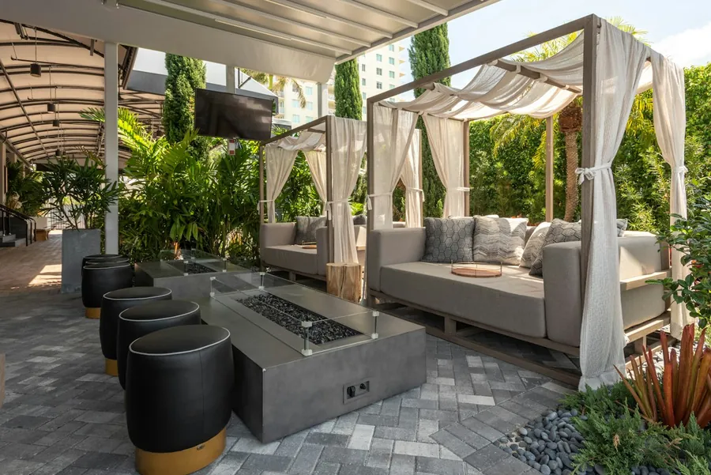

Waterfront + zero-proof list
1. Mastro's Ocean Club
Fort Lauderdale · on the Intracoastal at Oakland Park Blvd
Steakhouse and seafood
- Friday: Open 4–10 PM Friday
- Drive: about 35–40 min from home in Boca, arrive about 6:00 PM
- Price: $$$$ · gluten-sensitive steaks $61–$91
- Rating: 4.8 on OpenTable from 4,167 reviews
A waterfront dining room right on the Intracoastal at the Oakland Park bridge, with a cabana and firepit patio and a lounge where a live act plays every night.
Why it fits you two
It checks the most boxes in one place: the water, live music on Friday, a printed zero-proof list for Caitlin, and a gluten-sensitive menu so ordering is easy. It's a splurge, and it feels like one.
What to order
Filet 8 oz$70, or the petite 6 oz filet at $61. On the gluten-sensitive menu with just salt and pepper. Don's non-fish pick
Rack of Lamb$86, on the gluten-sensitive menu. Another non-fish option for Don
Organic Lemon Pepper Chicken$40, on the gluten-sensitive menu. An easy GF order for Caitlin
Gluten-free pick
Mastro's has a dedicated gluten-sensitive menu. Steaks come without the house rub, seasoned with salt and pepper, and sides like garlic mashed potatoes, baked potato, asparagus and Brussels sprouts are on it, plus crème brûlée, chocolate-covered strawberries and the Chocolate Sin Cake for dessert. Ask your server for the allergen menu.Caitlin's drink: zero-proof drinks on the menu
Mastro's publishes a zero-proof cocktail list: Bubbly Bliss, Prickly Pear No-Rita, You Mango Me Hot! and the Sea Salt Caramel Espresso No-tini. Prices aren't posted online.Music
Live music in the lounge nightly, Friday 6–10 PM."When you want an evening where only the best will do you need to go to Mastro's!"OpenTable diner review, Nov 2026
Book ahead for a Friday. Valet. Business casual. Ask for a table by the water. 3000 NE 32nd Ave, Fort Lauderdale.
Photos: mastrosrestaurants.com